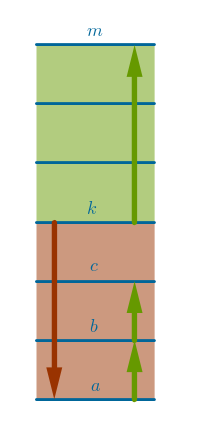
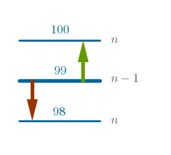
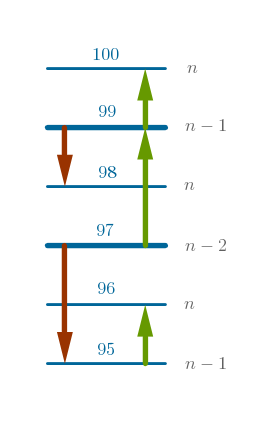

Problem
Either one of two identical eggs may or may not break if dropped from any floor of a \(100\)-story building. What is the optimal largest (worst-case) number of drops needed to find the lowest floor a fall from which these eggs will not survive?
Commentary
We can frame the upcoming deductions in terms of:
"eggs that do not survive a fall from a given floor and break into pieces"
or:
"eggs that resist a given floor"
or:
"floors that break an egg"
For brevity sake let us agree that the phrase:
"a floor that breaks an egg"
is equivalent to:
"the egg thrown down from this floor does not survive the fall and breaks into pieces"
Further, for even more brevity let us agree to name the floor that breaks an egg "bad" and the floor that does not break an egg "good".
We are told, then, that any floor in the building may or may not be bad which means that two scenarios are possible.
In the first scenario a bad floor does actually exist and is located somewhere between the first and the \(100\)-th floor including the boundaries.
In the second scenario the building does not have a bad floor at all.
Our job then is to come up with a testing scheme that covers both scenarios in the optimal worst-case number of steps by the end of carrying out which we with absolute certainty either find a lowest bad floor or conclude that there is no bad floor in that building at all.
One Egg
To gain some more insight into the problem let us consider the simplest case when we have only one egg to find the lowest bad floor. We observe right away that we can not start our testing process, whatever it is, at the higher floor and move down to the lower one.
Assume that we drop the only egg from, say, \(71\)-st floor. That floor may or may not be bad. If it is bad then we have no more eggs and we can not be absolutely sure that that indeed is the lowest bad floor. May be the \(19\)-th floor is also bad and, hence, the lowest? Or is it?
From this experiment we conclude that if all we have is just one egg to find the lowest bad floor then our only strategy that guarantees a correct result is to execute the drops in one direction only - from the lower to the higher floor moving up only one floor at a time.
We go to the first floor and drop the egg from there. If that floor is bad then it is the lowest bad one and the problem is solved. If that floor is not bad then we move up to the second floor and repeat the process. We proceed in such a manner until we reach the \(100\)-th floor. Using this testing scheme guarantees with absolute certainty that we either find a lowest bad floor or we conclude that there is no bad floor in this building if the egg is still intact.
It may not be entirely obvious at this stage but we observe that the idea of bracketing may already be recognized - a bracket is some number of floors that must be tested with one egg only. In this particular case, for that building and for one egg, the bracket is the entire height of the building or all \(100\) floors.
Two Eggs
With two eggs available for testing we exercise the full potential of the above bracketing idea as follows. We use the first egg to create a bracket consisting of the lower and upper boundaries by throwing that egg from a certain, \(k-\)th, floor. We use the outcome of that drop as efficiently as possible by deriving a benefit from it regardless of the outcome.
If the first egg does not break then we establish with absolute certainty that no floor below the \(k-\)th one is bad and we can safely move on to the next bracket - recall that with One-Egg testing we always move up one floor at a time while with two eggs we want to move up one bracket at a time. As such, we go to the \(m-\)th floor, we have two eggs and the floors \([k + 1, m]\) are the suspects.
If the first egg does break then we establish with absolute certainty that no floor above the \(k-\)th one is of interest to us anymore and since we still have the second egg intact we use it to find the lowest bad floor by going to the lowest boundary of the current bracket, floor \(a\), and testing all the remaining floors using the One-Egg testing scheme. As such, the floors \([a, k]\) are the suspects and we test them in the following order:
$$a, b, c$$In that, latter, case if we get to the floor \(c\) with the second egg intact then the \(k-\)th floor is the lowest bad one and the problem is solved. Conversely, the first floor within the \(a, b, c\) group that breaks the second egg is the lowest bad one and the problem is solved also.
In summary, this is the intuitive approach - if the current bracket is good then we move up one bracket, otherwise we explore the current bracket to establish with absolute certainty how bad the badness is. In that fashion we keep moving up until we reach the \(100\)-th or higher floor. We stack the brackets one on top of the other tight since no floor can be left untested.
However, the following questions that address the core of the problem remain:
Measuring these parameters against \(100\) floors it quickly becomes apparent that the number of candidate searching strategies is enormous. Since each bracket described above is a subset of a set of \(100\) items then there are \(2^{100}\) subsets or strategies to choose from and:
- exactly how do we choose an optimal strategy?
- how do we prove its optimality?
Before we move on we observe the following. Since both eggs are identical,
they also behave identically when dropped - they resist the breakage effort
in exactly the same way. It means that if, for example, the \(n\)-th floor
breaks the first egg and the previous, \((n - 1)\)-st, floor does not break
the second egg then that is all that we need to conclude with absolute
certainty that the \(n\)-th floor is indeed the lowest bad one.
To be completely honest I have to mention that my first solution was based on traditional, forward, logic. I came to the Reverse Order solution later in time and, as such, it was affected by my knowledge of the right answer. However, my traditional solution is rather lengthy and, in Reverse Order spirit, it is presented last.
Solution II
As Reverse Order prescribes let us assume that there exists an optimal, not known to us yet, testing scheme that solves the given problem in \(n\) drops with two eggs. Let us start unwinding the solution from the very last state when we execute the last, \(n-\)th, drop. From which floor can we possibly execute that last drop?
Last Floor
Since the problem is asking us to find a worst-case testing scheme it is reasonable to end up on the \(100\)-th floor of the building implying that all the previous \(99\) floors have been tested and that they all turned out to be good. There are only two choices for the quality of the \(100\)-th floor - it is either good or bad. Which egg we use to execute that last, \(n-\)th, drop is irrelevant.
If the \(100\)-th floor breaks the egg then we conclude with absolute certainty that it is the lowest bad floor and the problem is solved. If the \(100\)-th floor does not break the egg then we conclude with absolute certainty that there is no bad floor in this building.
Moving in reverse order, we ask:
- from which floor did we come to the \(100-\)the floor?
Previous Floor
Since no floor can be left not tested, to answer that question we ask a helper question:
- since the drop from the \(100-\)th floor constitutes the last, \(n-\)th, and the only remaining drop in the unknown testing scheme, how many floors can be possibly tested with absolute certainty with just one drop?
The answer to the above question is "\(1\)", we have established it in One Egg section, and the answer to the previous question then is "\(99\)" and this is what our testing scheme looks like so far:
$$?, 99, 100$$Quality-wise the \(99-\)th floor can be only either good or bad. The reason we went up one floor from the \(99-\)th floor is because the \(99-\)th floor turned out to be good and we have either the first or the second egg intact. And what if the \(99-\)th floor is bad?
If the \(99-\)th floor is bad then we have just spent the first egg and we now have only one, second, egg intact. Again, we ask:
- how many floors can be tested with absolute certainty with one egg?
We have already answered that question in One Egg section - one floor only. Earlier we have remarked that if a current floor breaks an egg then we are not interested in any of the floors above the current one. The only suspects are now below the current floor. Consequently, the unknown testing scheme must allow for only one possible scenario - the \(98-\)th floor is either good or bad and we can determine that quality we absolute certainty by dropping the only remaining, second, egg from that, \(98-\)th, floor.
If the second egg breaks then the \(98-\)th floor is the lowest bad one and the problem is solved. If the second egg does not break then the \(99-\)th floor is the lowest bad one and the problem is solved also.
We now observe that standing at the \(99-\)th floor, with the only remaining, \(n-\)th, drop left to be executed we can test with absolute certainty either the \(100-\)th floor, with either the first or the second egg, or we can test the \(98-\)th floor with the second egg since the first egg has been spent on the \(99-\)th floor.
Further, the only reason we know the quality of the \(99-\)th floor with absolute certainty is because we have executed the \((n - 1)-\)st drop bringing the total number of drops executed so far to \(2\) - with two drops and two eggs we can test with absolute certainty the quality of the last three floors.
Since the last three floors have been tested and we can only move down, let us keep moving in reverse order by answering the following question:
- from which floor did we come to the \(99-\)the floor?
Previous Floor
Let us assume that we have come to the \(99-\)th floor from the \(x-\)th floor.
Quality-wise that \(x-\)th floor can be only either bad or good. If that floor is good then, with both eggs intact, in two drops we can test with absolute certainty all the floors above it. And what if the floor \(x\) is bad?
If the floor \(x\) is bad then our only option is to go to some lower floor. Which one?
To be able to determine the quality of the \(x-\)th floor we must execute the \((n - 2)-\)nd drop from the \(x-\)th floor. Since we know that the \(x-\)th floor is bad, it means that the first egg is broken. Consequently, what we have at our disposal for testing is:
- only one, second, egg and
- two drops at the most
With that in mind, what is the only choice for \(x\) if no floors can be left not tested? The only choice for \(x\) is one floor below the \(98-\)th floor or "\(97\)".
Further, in One Egg section we have established already that in our \(a, b\) or \(95, 96\) group we must go the \(95-\)th floor and proceed with testing up one floor at a time.
Our testing scheme, then, is shaping up to be:
$$?, 97, 99, 100$$Moving in reverse order, we ask:
- from which floor did we come to the \(97-\)the floor?
Previous Floor
If the floors \(95\) and \(96\) are tested with the second egg and no floors can be left not tested then the only floor from which we can come to the \(97-\)th floor must be one floor below the \(95-\)th floor or the \(94-\)th floor.
If the \(94-\)th floor is good then we move up to the \(97-\)th floor and we know how to proceed from there. If the \(94-\)th floor is bad then we have only one, second, egg left intact and we have \(3\) drops at the most to perform our testing. Which floors can be tested then? From One Egg section it follows that in this case \(91-\)st, \(92-\)nd and \(93-\)rd floors must be tested. And so on:
$$?, 90, 94, 97, 99, 100$$By now it should be clear that even if do not yet grasp the underlying mathematical principle that governs the solution of this problem we, nonetheless, can construct the sequence of floors that solves the problem using the following pattern:
the number of drops with which the higher floors can be tested with two eggs must be equal to the number of drops with which the lower floors can be tested with just one egg
Computationally we take the difference between any two consecutive floor numbers in the current scheme in reverse order, add one to that difference and then subtract the result from the current left-most floor number:
$$100 - 99 = 1$$ $$1 + 1 = 2$$ $$99 - 2 = 97$$and:
$$99 - 97 = 2$$ $$2 + 1 = 3$$ $$97 - 3 = 94$$and:
$$97 - 94 = 3$$ $$3 + 1 = 4$$ $$94 - 4 = 90$$and so on until we reach a floor number that is less than one:
$$-5, 9, 22, 34, 45, 55, 64, 72, 79, 85, 90, 94, 97, 99, 100$$If we add \(5\) to each floor number in the above scheme we will obtain the following:
$$14, 27, 39, 50, 60, 69, 77, 84, 90, 95, 99, 102, 104, 105$$Now we can make the following conclusions:
- whichever scheme we choose we can find the lowest bad floor in at most \(14\) drops
- the bracket size diminishes by one as we go up
- the budget of \(14\) drops is common and must be shared between both eggs and all the brackets. If the first egg breaks after, say, three drops then the second egg gets \(14 - 3 = 11\) drops
- the ordinal number of the floor from which the testing should commence is equal to the initial bracket size and is found by solving the following equation for \(n\):
$$S = \frac {n(n + 1)}{2}$$where \(S\) is the sum of first \(n\) natural numbers closest to the height of the building. In our case:
$$S = 105$$ $$105 = \frac {n(n + 1)}{2}$$ $$n = 14$$
Solution I
My direct solution was based on a series of trial and error attempts. At first I started with \(50-\)floor brackets: in two drops we get to the \(100-\)th floor where the first egg breaks. For the worst-case scenario we now have to execute \(49\) more drops of the second egg to test all the remaining floors starting from the \(51\)-st floor and ending with the \(99-\)th floor for a total of \(2 + 49 = 51\) worst-case drops.
In a similar fashion for \(25\)-floor brackets we obtain \(4 + 24 = 28\) worst-case drops, for \(20\)-floor brackets we obtain \(5 + 19 = 24\) drops and for \(10\)-floor brackets we obtain \(10 + 9 = 19\) drops.
Clearly a pattern emerges. Expressing the number of drops \(n\) as a function of the initial floor \(x\) we get:
$$n = f(x) = \frac {100}{x} + x - 1$$To find the minimum of \(f(x)\) we take its first derivative and equate it to zero:
$$f'(x) = -\frac {100}{x^2} + 1 = 0$$ $$x^2 = 100$$ $$x = 10$$or the square root of the building's height. It follows then that if we start our tests at the \(10\)-th floor and proceed on non-breakages up \(10\) floors at a time then we will get the optimal worst-case number of tests.
The thin veneer of words like "function" and "derivative" made this "solution" seem plausible, at first, but then out of curiosity I decided to see what the numbers looked like if we started the testing process at some other floors - not necessarily the even multiples of \(100\) - and proceeded with the same, meaning constant, size of each bracket.
For example, if we start the testing process at the eighth floor then in \(12\) eight-floor brackets we get to the \(96\)-th floor which turns out to be bad and the first egg is broken. How many more drops do we have to perform with the second egg in this case? Seven more - from the \(89\)-th floor all the way up to and including the \(95\)-th floor for a grand total of \(12 + 7 = 19\) drops and so on. Below is a two-column table: its first column is the initial floor number and its second column is the total number of worst-case drops:
$$\begin {array} {rr} 16 & 21\\ 15 & 20\\ 14 & 20\\ 13 & 19\\ 12 & 19\\ 11 & 19\\ 10 & 19\\ 09 & 19\\ 08 & 19\\ 07 & 20\\ 06 & 21\\ \end {array}$$As was expected \(19\) drops looks like a minimum. But now we see that it is true for a narrow band of floors \(8\) through \(13\).
In the next table I decided to keep the intermediate results. I looked at the worst-case scenario for each \(10\)-floor bracket.
For example, for the \(10\)-th floor I assumed that the \(10\)-th floor is bad, for the \(20\)-th floor - that the \(20\)-th floor is bad, for the \(30\)-th floor - that the \(30\)-th floor is bad and so on.
In the table below the first column is the bracketing floor number, the second column is the number of full brackets that we jumped over so far, the third column is the number of one-egg drops performed to exhaustively test the current bracket and the last column is the sum of the previous two numbers:
$$\begin {array} {rrlrlr} 10 & 1 & + & 9 & = & 10\\ 20 & 2 & + & 9 & = & 11\\ 30 & 3 & + & 9 & = & 12\\ 40 & 4 & + & 9 & = & 13\\ 50 & 5 & + & 9 & = & 14\\ 60 & 6 & + & 9 & = & 15\\ 70 & 7 & + & 9 & = & 16\\ 80 & 8 & + & 9 & = & 17\\ 90 & 9 & + & 9 & = & 18\\ 100 & 10 & + & 9 & = & 19\\ \end {array}$$From the table above we see that though the number of the one-egg drops remains the same, nine, the number of full bracket jumps grows from the best worst case, ten, to the worst worst case, \(19\). My thought was that in the early worst cases we underdo some number of drops while in the later worst cases we overdo them. And here lies the minimization opportunity.
If we pair up the farthest numbers relative to an imaginary middle: \(10\) and \(19\), \(11\) and \(18\), \(12\) and \(17\), \(13\) and \(16\), etc, they all add up to the same number: \(29\).
My thought was that the only simplest way I can optimize the current solution is by making the last column in the above table the same for all the brackets or for all the worst-case scenarios. In other words the sum of the full bracket jumps and the one-egg drops, done with the first and then the second egg, should always be the same. Whether it is the true minimum remains to be proven. But my hunch was that the number should be close to a simple arithmetic average of \(10\) and \(19\):
$$10 + 19 = 29$$ $$29 \div 2 = 14.5$$Since the floor numbers must be whole, is it \(14\) or \(15\)? Assume it is \(15\). It really does not matter - we need just a number to work with. Then if the number of the full bracket jumps grows by one then the number of the one-egg drops must diminish by one in order for their total sum to remain constant. In other words for the initial bracketing floor the sum must look as follows:
$$1 + 14 = 15$$For the second bracketing floor that sum must be:
$$2 + 13 = 15$$For the third bracketing floor the sum must be:
$$3 + 12 = 15$$and so on.
It means that as the number of full bracket jumps grows by one the number of one-egg drops diminishes by one. Which, in turn, means that the bracket size diminishes as we go to higher floors.
Let the initial floor of the first bracketing test be \(f_1\). The second bracketing test will then be at the floor:
$$f_2 = f_1 - 1$$The third - at:
$$f_3 = f_2 - 1 = f_1 - 1 - 1 = f_1 - 2$$The fourth - at:
$$f_4 = f_3 - 1 = f_1 - 3$$and so on. For the \(i\)-th drop we obtain:
$$f_i = f_1 - i + 1$$Since we have to test all the floors in the building, the sum total of all the \(f_i\) terms must be at least \(100\), may be more:
$$\sum_{i=1}^n (f_1 - i + 1 ) \geqslant 100$$ $$\sum_{i=1}^n f_1 - \sum_{i=1}^n i + \sum_{i=1}^n 1 \geqslant 100$$ $$nf_1 + \frac {n(n + 1)}{2} + n \geqslant 100$$Let us assume the equality for now:
$$nf_1 - \frac {n(n + 1)}{2} + n = 100$$We have one equation and two variables: \(n\) and \(f_1\). In the constant bracketing size scheme \(n\) and \(f_1\) were locked into the following relationship:
$$n = \frac {100}{f_1} + f_1 - 1$$In this case,however, we see that the total number of tests is the same for any bracket. And if it is the same for all then it must be so for the initial one when \(n = f_1\). Hence:
$$f_1^2 - \frac {f_1^2}{2} - \frac {f_1}{2} + f_1 - 100 = 0$$ $$\frac {f_1^2}{2} + \frac {f_1}{2} - 100 = 0$$ $$f_1^2 + f_1 - 200 = 0$$ $$f_1(1, 2) = \frac {-1 \pm \sqrt {1 + 800}}{2}$$ $$f_1(1) = \frac {-1 - 28.3}{2} = -14.65$$ $$f_1(2) = \frac {-1 + 28.3}{2} = 13.65$$After we throw the negative root out and round \(13.65\) up we have our original inequality standing, \(f_1 = 14\) and the answer to the problem is:
$$14, 27, 39, 50, 60, 69, 77, 84, 90, 95, 99, 102, 104, 105$$So with two eggs we can test a \(105\)-story building in at most \(14\) drops. Generalizing for two eggs and \(n\) stories we obtain:
$$f_1^2 + f_1 - 2n = 0$$We can also rewrite this equation as:
$$f_1(f_1 + 1)/2 = n$$which has a familiar arithmetic interpretation of \(f_1\): it is the smallest last term of an arithmetic progression with the initial term \(1\) and a common difference \(1\) whose sum is at least \(n\).
Proof
We shall construct our proof based on a vehicle popular in computer programming - number systems with bases other than ten.
What is the most appropriate base for this problem?
Since an outcome of any drop of any egg from any floor is always strictly binary, it makes sense to use base two numbers:
- if an egg breaks when dropped then we mark this event as \(1\)
- if an egg does not break when dropped then we mark this event as \(0\)
We shall construct our base two numbers as follows. Allocate as many binary positions for a base two number as there are base ten floors in a given building. For example, if the base ten height of a building is \(100_{10}\) then allocate \(100_{10}\), that is "one hundred", binary positions.
To each binary position assign one and only one corresponding floor. For example, to the first binary position assign the first floor, to the second binary position assign the second floor and so on.
Since the number of eggs available for testing is limited to two, it follows that our binary number can have at most two \(1\)s in it at any time.
With the above restriction in place we ask the following question:
- what is the smallest number of restricted binary positions required to represent the base ten height of a building?
To answer this question we first abstract ourselves from any concrete testing scheme or algorithm and state that regardless of the chosen algorithm only three types of outcomes of a test of a building are possible:
- all two eggs are broken
- only one egg is broken
- no eggs are broken at all
Let us now assume that there exists an algorithm executing which a given building can be tested in an optimal worst-case number of drops \(n\).
It follows then that if at the end of a test of a building via an arbitrary algorithm all two eggs are broken then the restricted binary representation of the base ten height of this building will have two \(1\)s and \(n - 2\) zeros, that binary number will have only one \(1\) and \(n - 1\) zeros if only one egg is broken and it will have zero \(1\)s and \(n\) zeros if no eggs are broken at all.
To gain a better feel for these restricted binary representations I have compiled a sample table for the scenario when both eggs are broken and I have chosen the building's heights to be the consecutive perfect sums of first powers of natural numbers:
$$\begin {array} {llllllllr} 0&0&0&0&0&0&1& \ldots & 1\\ 0&0&0&0&0&1&1& \ldots & 3\\ 0&0&0&0&1&1&0& \ldots & 6\\ 0&0&0&1&1&0&0& \ldots & 10\\ 0&0&1&1&0&0&0& \ldots & 15\\ 0&1&1&0&0&0&0& \ldots & 21\\ 1&1&0&0&0&0&0& \ldots & 28\\ \end {array}$$To answer the question that we have posed earlier using this table pick any row, find the left-most \(1\) in it, the ordinal position of this left-most \(1\) counted in a right-to-left fashion is the smallest number of restricted binary positions.
Remember that the "two-\(1\)s-at-the-most" restriction makes the number of required binary position grow more rapidly in comparison with the standard rules of decimal to binary conversion. For example, here is a standard base two representation of base ten seven:
$$7_{10} = 111_2$$In our case, however, three \(1\)s are not allowed and, hence, we must shift the binary \(1\)s to the left earlier:
$$7_{10} = 1000_{2'}$$Consequently, here are a few restricted binary representations of early natural numbers:
$$8_{10} = 1001_{2'}$$ $$9_{10} = 1010_{2'}$$ $$10_{10} = 1100_{2'}$$ $$11_{10} = 10000_{2'}$$ $$12_{10} = 10001_{2'}$$ $$13_{10} = 10010_{2'}$$ $$14_{10} = 10100_{2'}$$ $$15_{10} = 11000_{2'}$$ $$16_{10} = 100000_{2'}$$and so on.
We observe that the largest binary number for a fixed number of binary positions is reached when two such left-most positions are set to \(1\). Converted back to base ten these numbers turn out to be the perfect sums of first powers of the number of natural numbers equal to the fixed number of binary positions. That was a mouthful: if \(h\) is a base ten height of a building expressed in floors then:
$$\log_{2'}(h) = n : \quad \sum_{i = 1}^n i \geqslant h$$where the prime over two designates our restriction and the greater than or equal to sign should be read as "closest to".
By manual computation for a \(100_{10}-\)story building we obtain that the smallest number of binary positions required for its restricted binary representation is \(14\) - and that is what was required to prove.
In an attempt to find an analytic solution in closed form let us compute the total number of all the possible outcomes of a test performed via an arbitrary algorithm.
Let us consider the case when both eggs are broken by the end of a test. We temporarily make the two \(1\)s distinct by indexing them with natural numbers:
$$1_1, 1_2$$We observe that in that case the order of \(1\)'s placement is important and that the repetition of these \(1\)s is not allowed. Consequently, the number of ways to distribute \(2\) distinct items over \(n\) distinct buckets or floors is:
$$P(n, 2) = \frac {n!}{(n - 2)!}$$Before we remove the \(1\)s' uniqueness we observe that the total number of their permutations, two items permuted two at a time, is:
$$2!$$Now when we remove the items' uniqueness we have to divide the original number of their distributions \(P(n, 2)\) by \(2!\) to obtain \(C(n, 2)\):
$$\frac {P(n, 2)}{2!} = \frac {n!}{2!(n - 2)!} = C(n, 2)$$Consequently, for a scenario when only one egg is broken at the end of a test of a building we obtain the following number of all the possible distributions of one \(1\) over \(n\) distinct buckets:
$$C(n, 1)$$Lastly, for a scenario when no eggs are broken at the end of a test of a building at all we obtain the following number of all the possible distributions of zero \(1\)s over \(n\) distinct buckets:
$$C(n, 0)$$Adding the numbers of all the types of distributions together we obtain:
$$f(n) = C(n, 2) + C(n, 1) + C(n, 0)$$To connect \(f(n)\) to the height of the building \(h\) we use the Pigeonhole Principle by correlating pigeons to floors and pigeonholes to building's test outcomes.
The Pigeonhole Principle states that if there are more pigeons than pigeonholes than at least one pigeonhole will contain more than one pigeon. In our case it means that if there are more floors than there are outcomes then at least one floor will have more than one outcome assigned to it. In practice this translates into unacceptable loss of certainty - whatever algorithm is used to test a building it has to produce only one outcome and when that outcome is "certain floor is the lowest bad one" it better validate the simple truth that a building can ever have only one "lowest bad floor".
As such, the number of outcomes can not be "less than" but must be its converse - "greater than or equal to":
$$f(n, 2) = C(n, 2) + C(n, 1) + C(n, 0) \geqslant h$$which we generalize quickly for an arbitrary number of eggs \(e\):
$$f(x, e) = \sum_{i=0}^e C(x, i) \geqslant h$$where \(x\) must be solved for.
For \(e = 2\) and \(h = 100\) we obtain:
$$f(10, 2) = 56$$ $$f(11, 2) = 67$$ $$f(12, 2) = 79$$ $$f(13, 2) = 92$$ $$f(14, 2) = 106$$ $$f(15, 2) = 121$$ $$f(16, 2) = 137$$from where it follows that \(n = 14\) is the first number of drops with which more than \(100\) floors can be tested.
We observe in passing that \(f(n)\) represents the number of outcomes and not the number of floors: we get \(105\) outcomes for \(105\) floors if a lowest bad floor is present in a building and we add \(1\) to the total number of outcomes if there is no bad floor in a building at all bringing the total to \(106\).
Finally we mention that even thought a closed-form formula for the \(n-\)th Fibonacci number exists, to manually compute the next Fibonacci number we have to compute its previous term first - a consequence of the recursive definition of that sequence.
When it comes to three or more eggs in our case then the situation is somewhat similar - to compute the optimal number of worst-case drops required to test a building with a fixed height with larger number of eggs we must first compute the corresponding number for smaller number of eggs.
For example, for \(e = 3\) and \(h = 100\) we obtain:
$$f(8, 3) = C(8, 3) + C(8, 2) + C(8, 1) + C(8, 0) = 56 + 28 + 8 + 1 = 93$$ $$f(9, 3) = C(9, 3) + C(9, 2) + C(9, 1) + C(9, 0) = 84 + 36 + 9 + 1 = 130$$Assume that the first floor from which the test of the \(100-\)story building with \(3\) eggs should commence is \(x\). After we drop the first egg from the \(x-\)th floor and it breaks we have \(8\) drops and \(2\) eggs left. What is the tallest building that we can test in \(8\) drops with \(2\) eggs? We already know:
$$8 \times (8 + 1) = 72$$ $$72 \div 2 = 36$$which means that we commence the \(3-\)egg test of a \(100-\)story building from the \(37\)-th floor.
If we drop the first egg from the floor \(y > 37\) and it breaks then we have \(7\) drops and \(2\) eggs left. What is the tallest building that we can test in \(7\) drops with \(2\) eggs?
$$7 \times (7 + 1) = 56$$ $$56 \div 2 = 28$$ $$38 + 28 = 66$$which means that the second-bracket floor for this type of testing is the \(66-\)th one. If we proceed in this fashion further then we will see that in \(9\) drops with \(3\) eggs it is possible to test a \(130\)-story building:
$$37, 66, 88, 104, 115, 122, 126, 128, 130$$For a \(100\)-story building we would get to the top floor in \(4\) drops. We would then have to test \(11\) more floors, \(89\)-th trough \(99\)-th, with two eggs which can be accomplished in \(5\) tests: with \(3\) eggs and \(100\) floors there is no savings and \(9\) drops it is.
\(\blacksquare\)